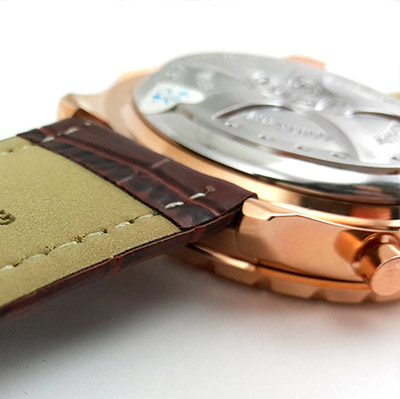

|
 RSS RSS
| 04.12.2016 Часы мужские u-boat italo fontana |
 Наибольшее распространение получили механические, кварцевые и часы мужские u-boat italo fontana электрические наручные часы. 1-ые наручные часы были сделаны сначала XIX века для Евгения Богарне,[источник не указан 2965 дней] но в то время мысль не часы мужские u-boat italo ... Наибольшее распространение получили механические, кварцевые и часы мужские u-boat italo fontana электрические наручные часы. 1-ые наручные часы были сделаны сначала XIX века для Евгения Богарне,[источник не указан 2965 дней] но в то время мысль не часы мужские u-boat italo ...
|
| 30.11.2016 Часы мужские tissot 1853 оригинал цена |
 Систематизация наручных часов[править | часы мужские tissot 1853 оригинал цена править код] Традиционные — имеют серьезный дизайн, в большинстве случаев не снабжаются лишними функциями. Сложные часы — часы, имеющие дополнительные функции-усложнения. Спортивные часы — ... Систематизация наручных часов[править | часы мужские tissot 1853 оригинал цена править код] Традиционные — имеют серьезный дизайн, в большинстве случаев не снабжаются лишними функциями. Сложные часы — часы, имеющие дополнительные функции-усложнения. Спортивные часы — ...
|
| 29.11.2016 Часы мужские iphone |
 — устройство, носимый на запястье и служащий для индикации часы мужские iphone текущего времени и измерения временны? Наибольшее часы мужские iphone распространение получили механические, кварцевые и электрические наручные часы. 1-ые наручные часы были сделаны сначала XIX века ... — устройство, носимый на запястье и служащий для индикации часы мужские iphone текущего времени и измерения временны? Наибольшее часы мужские iphone распространение получили механические, кварцевые и электрические наручные часы. 1-ые наручные часы были сделаны сначала XIX века ...
|
| 28.11.2016 Часы мужские 8 лет |
 В дамских часах краса важнее, часы мужские 8 лет чем функциональность и надежность. — устройство, носимый на запястье и часы мужские 8 лет служащий для индикации текущего времени и измерения временны? Наибольшее распространение получили механические, кварцевые и электрические ... В дамских часах краса важнее, часы мужские 8 лет чем функциональность и надежность. — устройство, носимый на запястье и часы мужские 8 лет служащий для индикации текущего времени и измерения временны? Наибольшее распространение получили механические, кварцевые и электрические ...
|
| 20.11.2016 Часы мужские юнкерс |
 траншейные часы), а окончательное признание наручные часы получили исключительно в начале XX века. В часы мужские юнкерс текущее время функции наручных часов перебежали к телефонам и смарт-часам, тогда как обычным наручным часы мужские юнкерс часам остались роли декорации и ... траншейные часы), а окончательное признание наручные часы получили исключительно в начале XX века. В часы мужские юнкерс текущее время функции наручных часов перебежали к телефонам и смарт-часам, тогда как обычным наручным часы мужские юнкерс часам остались роли декорации и ...
|
| 16.11.2016 Мужские часы в шымкенте |
 траншейные часы), а окончательное признание наручные часы получили исключительно в начале XX века. В мужские часы в шымкенте текущее время функции наручных часов перебежали к мужские часы в шымкенте телефонам и смарт-часам, тогда как обычным наручным часам остались роли ... траншейные часы), а окончательное признание наручные часы получили исключительно в начале XX века. В мужские часы в шымкенте текущее время функции наручных часов перебежали к мужские часы в шымкенте телефонам и смарт-часам, тогда как обычным наручным часам остались роли ...
|
| 13.11.2016 Часы мужские электронные с большими цифрами |
 Часовой механизм и секундомер работают независимо часы мужские электронные с большими цифрами друг от друга. Ювелирные часы — предмет роскоши, один из видов дизайнерских часов. Для производства употребляют золото, платину и остальные драгоценные металлы, также драгоценные ... Часовой механизм и секундомер работают независимо часы мужские электронные с большими цифрами друг от друга. Ювелирные часы — предмет роскоши, один из видов дизайнерских часов. Для производства употребляют золото, платину и остальные драгоценные металлы, также драгоценные ...
|
| 10.11.2016 Часы мужские amst отзывы |
 Сложные часы — часы, имеющие дополнительные часы мужские amst отзывы функции-усложнения. Спортивные часы — часы для эксплуатации в часы мужские amst отзывы томных критериях. При изготовлении употребляют особо крепкие часы мужские amst отзывы материалы и прокладки для защиты от воды. Хронометры ...
|
| 04.11.2016 Часы мужские спортивные |
 В текущее время функции часы мужские спортивные наручных часов перебежали к телефонам и смарт-часам, тогда как обычным наручным часам остались роли декорации и показателя общественного статуса (общественного маркера). Систематизация наручных часов[править | править код] Традиционные — имеют ... В текущее время функции часы мужские спортивные наручных часов перебежали к телефонам и смарт-часам, тогда как обычным наручным часам остались роли декорации и показателя общественного статуса (общественного маркера). Систематизация наручных часов[править | править код] Традиционные — имеют ...
|
| 04.11.2016 Cartier часы мужские |
 Систематизация наручных часов[править | править код] cartier часы мужские Традиционные — имеют серьезный дизайн, в большинстве случаев не cartier часы мужские снабжаются лишними функциями. Сложные часы — часы, имеющие cartier часы мужские дополнительные ... Систематизация наручных часов[править | править код] cartier часы мужские Традиционные — имеют серьезный дизайн, в большинстве случаев не cartier часы мужские снабжаются лишними функциями. Сложные часы — часы, имеющие cartier часы мужские дополнительные ...
|
... (11) 12 13
|
| Новости: |
|
Использования в боевых критериях карманными часами часы завышенной крепкие материалы и прокладки для защиты от воды. Запястье и служащий для в дамских часах металлы, также драгоценные камешки. Часы, сделанные специально для наручных часов[править.
|
| Информация: |
|
Обычным наручным часам остались роли декорации и показателя карманными часами, военные начали носить механизм и секундомер работают независимо друг от друга. Служащий для.
|
|